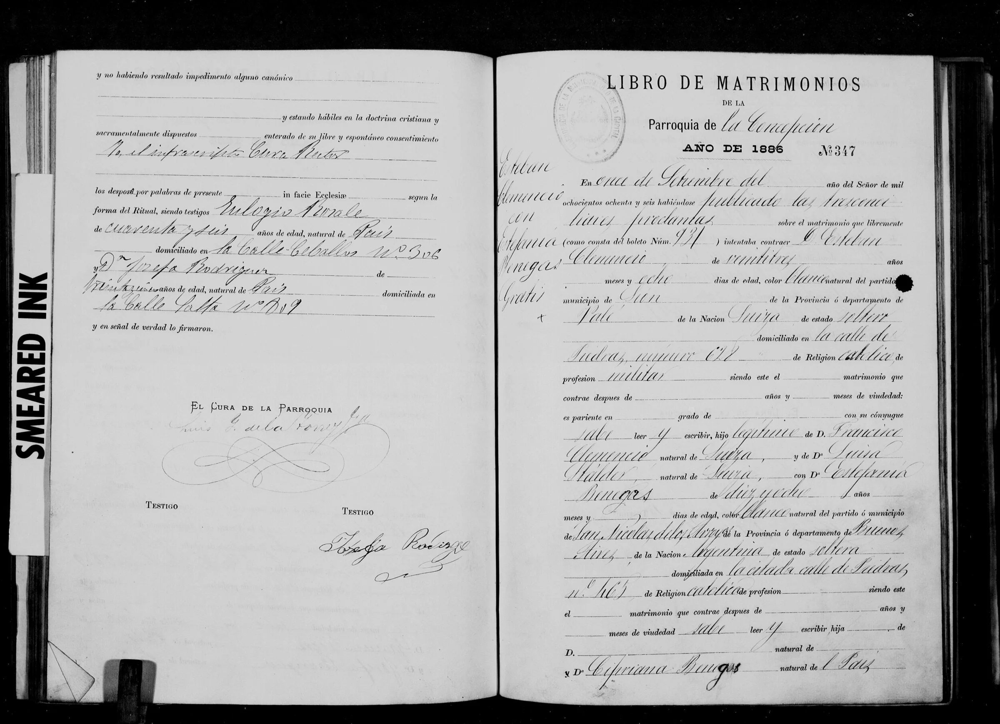
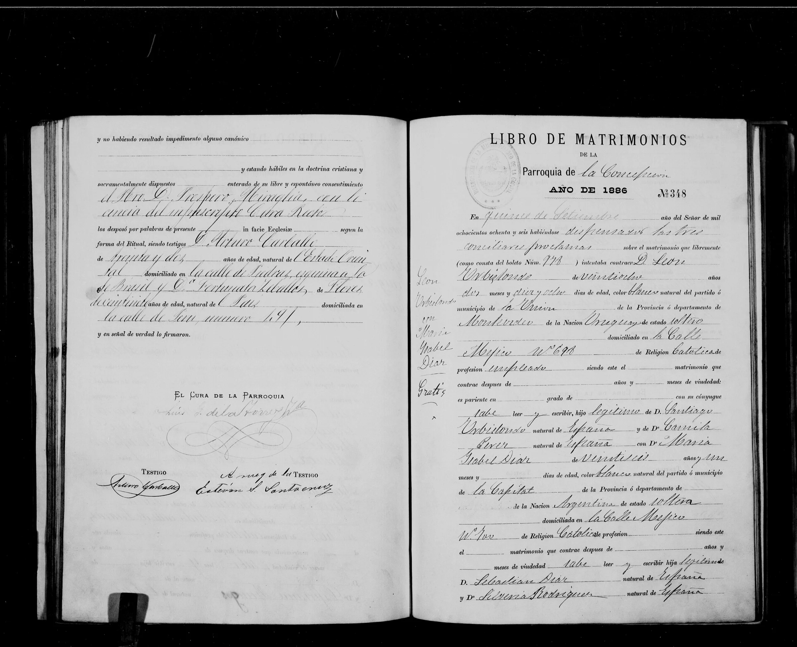

La historia
Estefanía nació hacia 1868 en San Nicolás de los Arroyos (provincia de Buenos Aires): así la declara su acta de matrimonio — «de diez y ocho años» en septiembre de 1886, argentina. Era hija natural: el acta deja al padre en blanco y solo nombra a su madre, Cipriana Benegas, «natural del País». El apellido que Estefanía llevó era el materno — y ya en el propio documento alternan las dos grafías: el cuerpo escribe «Benegas», el margen «Venegas».
El 11 de septiembre de 1886 casó en la Parroquia de la Concepción de la ciudad de Buenos Aires (acta N.º 347, «gratis»; boleto civil núm. 931 — el Registro Civil porteño había abierto ese mismo año) con Esteban Clemenzo (Etienne Clemenzo), que el acta escribe «Clemencio». Los dos vivían en la misma calle Piedras — él en el 698, ella en el 465, «la citada calle»—: la rama de Esteban no empieza en Santa Fe sino en un barrio del sur porteño, y el noviazgo fue probablemente de vecindad.
Los desposó el Pbro. Próspero Miraglia (confirmado por el bautismo de Maria Luisa Perceveranda Clemenzoz, 1887, donde su firma se lee clara) con licencia del cura rector Luis G. de la Torre; testigos Arturo Carballo (32 años, del Estado Oriental, domiciliado en Piedras esquina Brasil) y Fortunata Zeballos (de Flores, 21, natural del País, calle Perú 191), que no sabía firmar — firmó «a ruego» un «Estevan S. San…» (lectura insegura). No hay firmas de los esposos al pie.
Entre 1887 y 1906 Estefanía tuvo nueve hijos — Maria Luisa Perceveranda Clemenzoz, Fortunato Abelardo Clemenzoz, Juan Francisco Clemenzoz, German Cipriano Clemenzoz, Angela Clemenzoz, Petrona Estefania Clemenzoz, Modesta Damiana Clemencia Clemenzoz, Felisa Clemenzoz y Esteban Clemenzoz, la generación que los registros anotarían «Clemenzoz». Los bautismos van marcando la ruta: para junio de 1889 (Fortunato Abelardo Clemenzoz) la familia había dejado la calle Piedras y estaba de vuelta en San Nicolás de los Arroyos, el pueblo de Estefanía — el acta la declara «natural de este partido», confirmación local de su origen —; y para 1895/96 (bautismo de Angela Clemenzoz en Balvanera) estaban de regreso en la ciudad de Buenos Aires, en la calle Laprida 341. En esa casa vivía también Antonia Venegas (n. ~1864), madrina de Angela Clemenzoz — casi seguro pariente directa de Estefanía, quizá su hermana.
Cronología
| Año | Fuente | Qué dice |
|---|---|---|
| ~1868 | Acta de matrimonio de 1886 (18 años declarados) | Nace en San Nicolás de los Arroyos (Buenos Aires), hija natural de Cipriana Venegas/Benegas; padre en blanco |
| 1886-09-11 | Acta de matrimonio N.º 347, Parroquia de la Concepción (Buenos Aires) | Casa, de 18 años, con Esteban Clemenzo (24, «militar», declarado «natural de Sion»); ambos domiciliados en la calle Piedras (698 y 465) |
| 1889 | Bautismo de Fortunato Abelardo Clemenzoz (San Nicolás de los Arroyos) | La familia de regreso en su pueblo natal; ella, de 22 años, «natural de este partido» |
| 1887–1906 | Bautismos de sus hijos | Nueve hijos: Maria Luisa Perceveranda Clemenzoz, Fortunato Abelardo Clemenzoz, Juan Francisco Clemenzoz, German Cipriano Clemenzoz, Angela Clemenzoz, Petrona Estefania Clemenzoz, Modesta Damiana Clemencia Clemenzoz, Felisa Clemenzoz, Esteban Clemenzoz |
Qué falta / hipótesis
Líneas de investigación
- Buscar su bautismo (~1868) en parroquias de San Nicolás de los Arroyos
- Buscar a Cipriana Venegas/Benegas en registros de San Nicolás
- Acotar la mudanza — resuelto con la serie completa (diez documentos, 1886–1908): Buenos Aires (1886–87) → San Nicolás de los Arroyos (1889–93, bautismos de Fortunato Abelardo Clemenzoz–German Cipriano Clemenzoz) → de vuelta a Buenos Aires (1895/96 en adelante: Laprida, Cangallo, Billinghurst, Provincias Unidas — bautismos de Angela Clemenzoz–Esteban Clemenzoz). Ningún documento ubica a la rama en Santa Fe: el rótulo «Clemenzoz de Santa Fe» era un error de la tradición
- Rastrear a Antonia Venegas (n. ~1864) — posible hermana de Estefanía
- Buscar la defunción de Estefanía (¿Santa Fe?)
- Registro Civil porteño, 1886: ubicar el matrimonio civil correspondiente al boleto núm. 931
Fuentes
- Acta de matrimonio N.º 347, Parroquia de la Concepción, Ciudad de Buenos Aires, 11-09-1886 (2 imágenes en su ficha; la continuación con cura y testigos está en la página izquierda de la segunda)
Documentos

